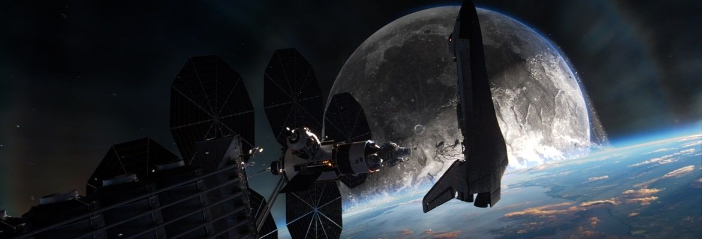
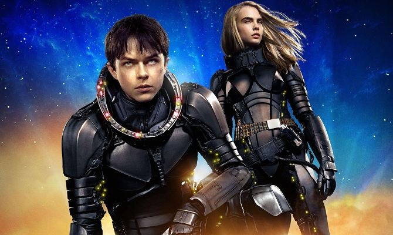
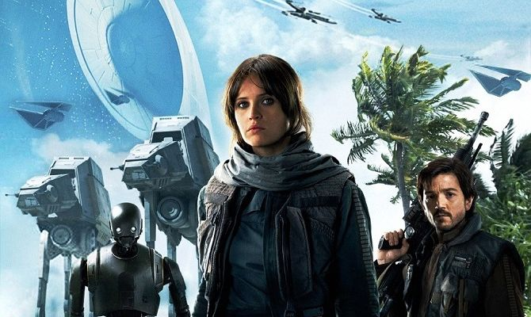
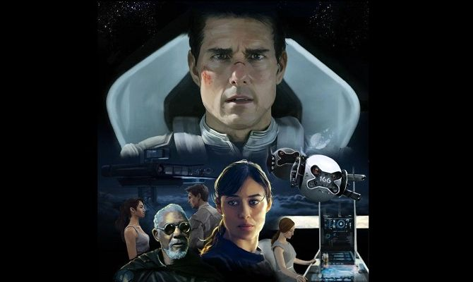

Минуло 7 століть з того часу, як люди освоїли космос і навчилися співіснувати з інопланетними істотами, що населяють галактику. Метрополія Альфа стала гостинним будинком для різних рас. Закохані один в одного спеціальні агенти Лорелін і Валеріан розплутують змову, в результаті якої з планети Мюл викрали броненосця, що постачає на світовий ринок цінні перлини.

Фільми про космос та подорожі на інші планети
Зоряні глибини завжди манили людину, хоча науці досі невідомо, чи є життя поза Сонячною системою. Що станеться з експедицією, з ким зустрінуться астронавти, чи витримає Земля атаку інопланетної раси? На ці та інші питання відповідає добірка найкращих фільмів про космос та інші планети, серед яких є кіно у жанрі фантастики, драми, бойовика та навіть комедії.
Валеріан та місто тисячі планет (2017)
Оригінальна назва: Valerian and the City of a Thousand Planets
Жанр: Фантастика, фентезі, бойовик, пригоди
Актори: Дейн ДеГаан, Кара Делевінь, Клайв Овен, Ріанна, Ітан Гоук…
Країна: Франція, Китай…
Вікові обмеження: IMDb – 6.4
Вікові обмеження: 12+
Бунтар Один. Зоряні Війни: Історія (2016)
Спін-офф легендарної серії фільмів, присвячений команді повстанців під керівництвом відважної Джин Ерсо. Безстрашні бійці мають викрасти креслення смертоносної зброї в імперців. Не всі хоробрі повстанці повернуться додому, але вони готові принести себе в жертву. Хтось із них іде на ризик заради зведення особистих рахунків, але більшість бійців розуміє, що на кону стоїть доля Всесвіту.
Оригінальна назва: Rogue One
Жанр: Фантастика, бойовик
Актори: Фелісіті Джонс, Дієґо Луна, Різ Ахмед…
Країна: США
Вікові обмеження: IMDb – 7.8
Вікові обмеження: 16+
Світ забуття (2013)
Після нашестя інопланетян Земля стала непридатною для життя. Людям доводиться жити над хмарами. Одного разу технік Джек, спустившись на поверхню планети, виявляє розбитий космічний корабель, в якому спить симпатична незнайомка. Розбудивши дівчину, він усвідомлює, що вона єдиний космонавт, який вижив після експедиції на Марс.
Оригінальна назва: Oblivion
Жанр: Фантастика, бойовик, трилер, пригоди, мелодрама
Актори: Том Круз, Ольга Куриленко, Андреа Райзборо, Морґан Фріман, Ніколай Костер-Валдау…
Країна: США
Вікові обмеження: IMDb – 7.0
Вікові обмеження: 12+